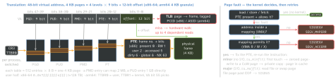
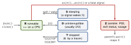

os · folio
In one line: A process = an address space + resources (fds, credentials, signal dispositions) with ≥1 thread (registers + stack, the unit the scheduler runs). The kernel shares CPUs by scheduling, maps each process’s virtual pages to physical frames through page tables (cached in the TLB), fills them lazily on page faults, and is entered only by a system call, an exception or an interrupt.
Download PDF Print view LaTeX source


Process vs thread — what each owns (POSIX)
| process-wide (all threads share) | per thread |
|---|---|
| address space: code, heap, mappings | stack, registers, PC, SP |
| PID, parent, process group, session, tty | thread ID |
user / group IDs, open fds, fcntl locks | errno |
| signal dispositions, umask, cwd, root | signal mask, alt. stack |
| timers, nice, rlimits, CPU-time totals | RT policy, priority; Linux: affinity, capabilities |
Linux makes both with clone(); a thread shares VM, handlers, thread group (CLONE_THREAD ⇒ _SIGHAND ⇒ _VM); getpid() = group id, gettid() = own. NPTL is 1:1. Stacks: Linux = soft RLIMIT_STACK (kernel default 8 MiB); Darwin 512 KB, main 8 MB macOS / 1 MB iOS — touched pages only.
Process lifecycle — ps state codes

A zombie holds a process-table slot until the parent waits (a full table blocks new processes). Orphans go to init or the nearest subreaper (PR_SET_CHILD_SUBREAPER, 3.4). SIGCHLD = SIG_IGN or SA_NOCLDWAIT: no zombies.
fork, exec, spawn — what crosses
fork() child | after execve() | |
|---|---|---|
| memory | CoW — only page tables copied | new image, mappings gone |
| threads | the caller only | others destroyed |
| PID | new | same: no new process |
| fds | same open file descriptions | kept unless close-on-exec |
| signals | handlers, mask copied; none pending | caught → default, rest kept |
| dropped | mlocks, timers, fcntl locks, AIO | mlocks, timers |
- Threaded parent: one thread, every mutex as it was — async-signal-safe calls only until
execve(). A failed exec ends in_exit(): noatexit, no stdio flush. vfork(): parent suspended, child borrows its memory and stack until exec or_exit; dropped in POSIX.1-2008.posix_spawn()= fork + exec in one call (made for MMU-less systems); glibc ≥2.24:clone(CLONE_VM|CLONE_VFORK).- The split came from the Berkeley time-sharing system; the PDP-7
forkwas 27 lines of assembly (Ritchie 1979). “Afork()in the road” (HotOS 2019): unsafe with threads, inefficient, insecure; 1304 Ubuntu packages callfork, 41posix_spawn. - Apple: iOS apps may not spawn processes at all; fork without exec is “not safe on any Apple platform” — use
posix_spawn(Apple DTS).
Scheduling — Linux policies
| priority | rule |
|---|---|---|
OTHER | nice −20…19 | fair share, weight ×1.25 per nice step: EEVDF |
BATCH | nice | always treated as CPU-bound (IDLE: below nice 19) |
FIFO | 1–99 | runs until it blocks, yields or a higher one wakes |
RR | 1–99 | FIFO + a 100 ms quantum |
DEADLINE | — | runtime ≤ deadline ≤ period (3.14); beats all others |
- It schedules threads. RT + deadline get 950 ms of each 1 s, 5 % stays for the rest. Autogroup (2.6.38): a group per session —
make -jcannot starve the desktop. - EEVDF (6.6, Oct 2023; replaced CFS of 2.6.23; Stoica & Abdel-Wahab 1995): lag = fair share - CPU received; lag ≥0 = eligible; the earliest virtual deadline runs;
sched_setattr()requests a slice. 6.12 (Nov 2024): sched_ext (schedulers in BPF) and PREEMPT_RT merged. - Context switch: save registers, switch kernel stack, pick the next; across processes also reload CR3 / TTBR0 — PCID / ASID keep the TLB entries; caches refill. Voluntary (blocked,
ru_nvcsw) vs involuntary (preempted,ru_nivcsw). - Darwin: QoS — user-interactive, user-initiated, utility, background — via
pthread_set_qos_class_self_np, notpthread_setschedparam; background runs more likely on efficiency cores; never spin-wait.
Virtual memory
Per process, one flat address space; the MMU translates every access. Buys isolation, per-page R/W/X, shared frames (libraries, CoW), lazy allocation, files as memory. Atlas, 1962: core + drum (16 000 + 96 000 words) seen as one store.
Granules (offset · bits per level · arm64 huge pages, PMD bold): 4 KB: 12 · 9 · 64 KB, 2 MB, 32 MB, 1 GB; 16 KB: 14 · 11 · 2 MB, 32 MB, 1 GB; 64 KB: 16 · 13 · 2 MB, 512 MB, 16 GB. Levels = (VA - offset bits) / bits per level. x86-64 5-level (P4D): 57-bit, 128 PiB virtual / 4 PiB physical (4-level: 256 TiB / 64 TiB); user space gets addresses above 47 bits only by passing a hint — JITs keep tags in high pointer bits.
- Not 4 KB everywhere: iOS 16 KB; Apple silicon ≠ Intel — read
vm_page_size. Android 15+ allows 16 KB; Play blocks updates without it from 1 Feb 2027 (API 35+). - TLB tags: ASID (arm64, 8 or 16 bits, in TTBR0_EL1; kernel entries global) / PCID (x86). PTI (4.15, Jan 2018, against Meltdown): user page tables map almost no kernel; every entry and exit rewrites CR3 (≈100 cycles), PCID spares the flush.
mmap — files and zeroed memory into the address space
MAP_ | writes go to | use |
|---|---|---|
PRIVATE, file | a private CoW copy, never the file | a file read as memory |
SHARED, file | the file; every mapper sees them | zero-copy I/O, IPC |
PRIVATE|ANON | own pages, zero-filled | malloc ≥128 KiB (glibc) |
SHARED|ANON | pages shared with fork() children | parent ↔ child memory |
The fd may be closed after mmap; offsets are page-aligned. A page past EOF (file truncated) → SIGBUS. MAP_POPULATE prefaults; MAP_FIXED_NOREPLACE (4.17) will not replace a mapping. Mmapped malloc blocks go back to the system on free; the threshold rises to freed sizes (≤32 MiB, 64-bit).
System calls — the only door in
User code (x86-64 CPL 3, arm64 EL0) enters the kernel (CPL 0, EL1) by a syscall, an exception (page fault) or an interrupt. arm64: SVC → EL1, HVC → EL2 hypervisor, SMC → EL3 firmware — the last two not from EL0.
| ABI | instr. | nr | arguments | error |
|---|---|---|---|---|
| Linux x86-64 | syscall | eax | rdi rsi rdx r10 r8 r9 | rax = − errno |
| Linux arm64 | svc #0 | w8 | x0–x5 | x0 = − errno |
| Linux RISC-V | ecall | a7 | a0–a5 | a0 = − errno |
| Darwin arm64 | svc #0x80 | x16 | — | carry flag set |
libc turns -errno into -1 + errno (per thread). Linux keeps the syscall interface stable; Apple guarantees only its dynamic libraries — static binaries unsupported. vDSO (AT_SYSINFO_EHDR), x86-64: clock_gettime, gettimeofday, time, getcpu without entering the kernel.
Signals
| Lx | mac | def. | raised by | |
|---|---|---|---|---|
SIGINT | 2 | 2 | Term | Ctrl-C (Ctrl-Z: SIGTSTP, stops) |
SIGBUS | 7 | 10 | Core | mapped page past EOF, bad alignment |
SIGKILL | 9 | 9 | Term | cannot be caught, blocked or ignored |
SIGSEGV | 11 | 11 | Core | unmapped address / wrong permission |
SIGPIPE | 13 | 13 | Term | write to a pipe with no reader |
SIGTERM | 15 | 15 | Term | kill’s default: please exit |
SIGCHLD | 17 | 20 | Ign | a child exited or stopped |
SIGSTOP | 19 | 17 | Stop | uncatchable like KILL; SIGCONT (18 / 19) resumes |
- POSIX
kill -ndefines only 1 2 3 6 9 14 15; 10 isSIGUSR1on Linux,SIGBUSon macOS — use names. A shell reports 128 + n after signal n. kill -9first: no handler, noatexit, no buffered output flushed — sendSIGTERM, then wait.- Disposition per process, mask per thread:
kill()reaches any one thread not blocking it, a fault the thread that caused it. Standard signals do not queue; real-time ones do, in order. Interrupted call:SA_RESTARTrestarts it, elseEINTR. - Handlers: async-signal-safe calls only (
write,_exit; notprintf,malloc), saveerrno— or block them and read asignalfd(2.6.22).
File descriptors · futex
fd = lowest free index in the process’s table → open file description (offset, flags) → file, socket, pipe. O_CLOEXEC (2.6.23) is atomic — a later fcntl races a concurrent fork + exec. EMFILE per process, ENFILE system-wide. futex: a 32-bit word; an uncontended lock is one user-space atomic, futex() only sleeps or wakes (2.6.0; Franke, Russell & Kirkwood, OLS 2002).